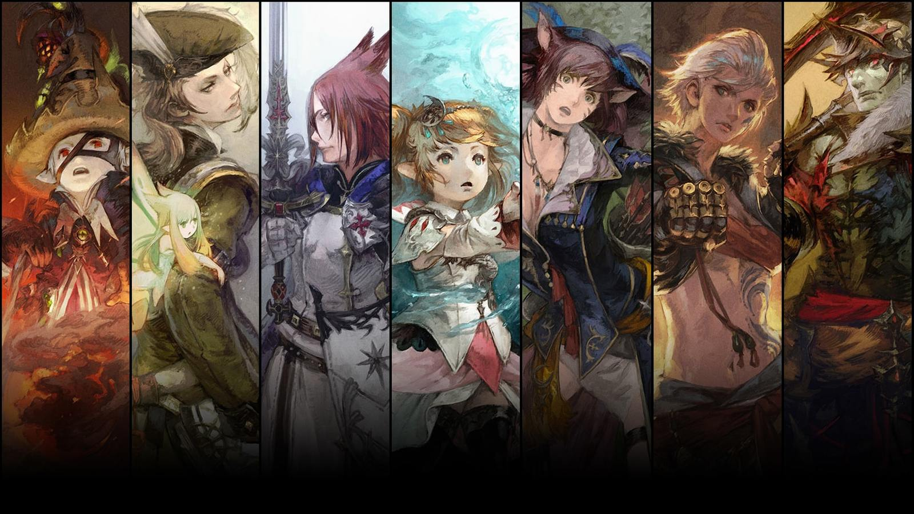

Final Fantasy 14 is an online MMORPG set in the world of Fantasy world of Eorzea where you're free to explore to your heart's content! In FFXIV, you play as the Warrior of Light, a saviour of the people or something I kinda skipped through A Realm Reborn but I know you save people. During your journey through the land of Eorzea you'll meet plenty of fun and interesting characters along with the ones who talk in exclusively Ye Olde English which totally doesn't get annoying at any point. The story for FFXIV tends to vary between extremely interesting and you spamming "skip cutscene" from A Realm Reborn to Heavensward to Stormblood then to Shadowbringers with the next DLC in line, Endwalker coming out November 23rd.
However back to the start of the game, After you've created your new Warrior of Light, probably a catgirl, you'll star off the game in one of these three major cities
Where you start is completely based off of the job you choose to fight off the evilness plaguing Eorzea which you can learn more about by going down to the job classes below.

FFXIV JOB CLASSES
In FFXIV you have the choice between 3 main roles. Tanks, Healers and DPS.
TANKS are the members of the party taking all the damage for their weak pathetic friends, running forward and trying to tank as many mobs as they can before dying and probably blaming their healer for not healing enough. Tanks are given a good amount of ablilites specifically for mitigating damage normally allowing the player to tank more then they normally can along with good AoE damage to help clear through those obnoxious trash packs.
For the 4 tanks in the game, only 2 of them are accessible off the start of the game in Gladiator, which laters turns into Paladin, or Marauder, which later turns into Warrior. The two you'll find later in the game are Dark Knight,a job found in the Heavensward expansion, and Gunbreaker, a job found in the Shadowbringers expansion.
HEALERS are the class where you get to choose who lives and dies, either via lack of heals or maybe pulling a party member to their demise. Healers are given plenty of abilities for healing, shielding, passively healing and buffing your party. However, just because your job is a healer doesn't mean you can sit there and do no damage, if you do that, it'll just make things take so much longer then they have to.
For the healers, much like tanks, you only have a choice between two however one of those classes doesn't even start as a healer. Conjurer is the basic healer in FFXIV, turning into White Mage when you hit level 30. For the second base game healer you'll be starting on the DPS class, Arcanist. This class at level 30 splits off into two classes of Summoner, a DPS, and Scholar, the healer.For your other two healing classes you'll find one of them again in Heavensward being Astrologian and your other one in the expansion that isn't out yet, Endwalker.
DPS can be split into 3 sub-sections of ranged physical, magical and melee DPS. since I'll be going more into detail on these classes on my two other tabs I won't talk too much about them here. The job of your role is pretty self explanitory though. Hit enemies, don't die.